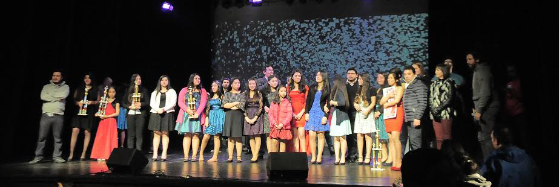
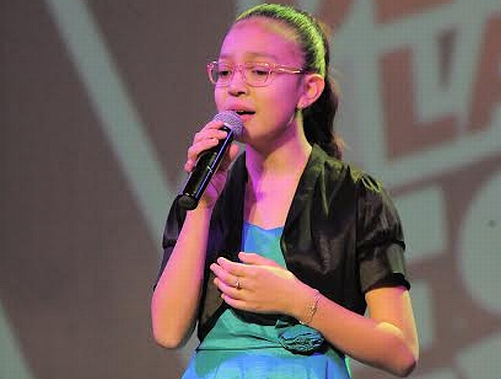

<!DOCTYPE html>
<html lang="en"></html>
<head>
  <meta charset="UTF-8"/>
  <title>Escuela Libertad Puerto Montt</title>
  <link rel="stylesheet" href="../css/noticia.css"/>
</head>
<body>
  <div class="banner1"></div>
  <div class="banner2"></div>
  <section id="nav_cero">
    <div class="box_one">
      <h1>Escuela <span>Libertad</span></h1>
    </div>
    <div class="box_two">
      <nav>
        <ul>
          <li><a href="/index.html">Home</a></li>
        </ul>
        <ul>
          <li><a href="/historia.html"><span>Historia</span></a></li>
        </ul>
        <ul>
          <li><a href="/integracion.html">Integracion</a></li>
        </ul>
        <ul>
          <li><a href="/planespropios.html"><span>Talleres</span></a></li>
        </ul>
        <ul>
          <li><a href="/ProyectoEducativo.html">PEI</a></li>
        </ul>
      </nav>
    </div>
  </section>
  <div class="wrap">
    <h3>2 Junio de 2017</h3>
    <div class="cabenoticia">
      <h1>Festival de la Canción</h1>
    </div>
    <div class="noticiacero__especial"></div>
    <div class="cab__noticia">
      <h1> Genesis Barrera se alzo con el primer puesto.</h1>
    </div>
    <div class="noticiauno">
      <div class="not__parr"> 
        <p>Previo a la organización de un festival interno de la canción, Génesis y su indiscutido talento se logro alzar con el primer lugar. De esta manera pudo representarnos en el festival comunal. </p>
        <P>En la versión XXXV del Festival Escolar de la Voz en Español 2017 en categoría Educación Básica, Génesis, perteneciente a 8º año, interpreto el tema “Aleluya”, logrando ganar el 1er lugar, demostrando así su gran talento artístico. </P>
        <P>Cabe mencionar que Génesis Barrera también interpreta con su maravillosa voz, el Himno de nuestro establecimiento, que es entonado todos los días lunes, al inicio de nuestra jornada escolar. (Interpretado a Lengua de Señas por Nicolás Rojas, Alumno Sordo, de nuestra unidad educativa)</P>
      </div>
      <div class="box__pics"></div>
    </div>
    <div class="box__comentario">
      <div class="box__comentario"></div><!-- Script de Comentario-->
<script>(function(d, s, id) {var js, fjs = d.getElementsByTagName(s)[0];if (d.getElementById(id)) return;js = d.createElement(s); js.id = id;js.src = "//connect.facebook.net/es_ES/sdk.js#xfbml=1&version=v2.9";fjs.parentNode.insertBefore(js, fjs);}(document, 'script', 'facebook-jssdk'));</script><div class="fb-comments"data-href="http://www.elibertad.cl/noticias/noticia5.html" data-width="100%" data-numposts="5"></div><div id="fb-root"></div>
    </div>
    <footer>
      <div class="direccion"><span class="icon-compass"></span>
        <h1>Dirección: Iquique 230, Poblacion Libertad - Puerto Montt</h1>
      </div>
      <div class="telefono"><span class="icon-phone"></span>
        <h1>Telefono : 65 2 484525</h1>
      </div>
      <div class="mail"><span class="icon-inbox"></span>
        <h1>libertad@escuelas.dempuertomontt.cl</h1>
      </div>
      <div class="face"><a href="https://www.facebook.com/esc.libertad.39"><span class="icon-facebook-official"></span></a></div><span class="icon-youtube-square"></span>
    </footer>
  </div>
</body>